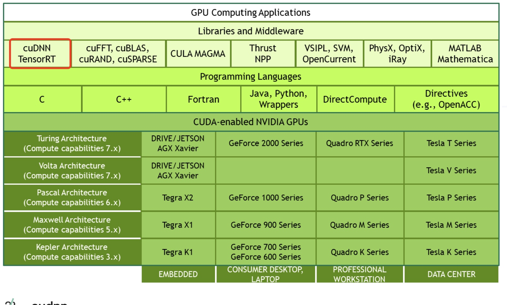

所属 Topic：深度学习 · 类型：概念
基础概念#
1.GPU#
-
显卡： 简单理解这个就是我们前面说的GPU，尤其指NVIDIA公司生产的GPU系列，因为后面介绍的cuda,cudnn都是NVIDIA公司针对自身的GPU独家设计的。
-
显卡驱动：很明显就是字面意思，通常指NVIDIA Driver，其实它就是一个驱动软件，而前面的显卡就是硬件。
-
gpu架构：指的是硬件的设计方式，比如流处理器中有多少core，是否有双精度计算单元等。常见的有Tesla、Fermi、Kepler、Maxwell、Pascal
-
芯片型号：芯片就是对上述gpu架构思想的实现。 其第二个字母代表是哪种架构。比如GT200、GK210、GM104、GF104等
其他:
显卡系列：本质上没什么区别，知识NVIDIA希望区分的三种选择，GeForce家庭娱乐、Quadro用于工作站、Tesla用户服务器
- GeForce显卡型号：G/GS、GT、GTS、GTX
2.CUDA#
| 名称 | 功能 | |
|---|---|---|
| cuda | NVIDIA推出的并行计算架构 | |
| cudn | 专门为深度学习计算设计的软件库，提供很多计算函数，是cuda架构中的一小部分 |
CUDA英文全称是Compute Unified Device Architecture，是显卡厂商NVIDIA推出的运算平台。 CUDA™是一种由NVIDIA推出的通用并行计算架构，该架构使GPU能够解决复杂的计算问题。按照官方的说法是，CUDA是一个并行计算平台和编程模型，能够使得使用GPU进行通用计算变得简单和优雅。

cudatoolkit#
cudatoolkit主要由一下组件组成
* compiler: cuda-c和cuda-c++编译器nvcc
* tools
* libraries 部分科学库和实用程序
* cuda samples
* cuda driver。驱动程序
nvcc和nvidia-smi#
nvcc就是cuda的编译器，可以从cudatoolkit的/bin目录获取，类似gcc就是c语言的编译器。
cuda程序有两种代码，一种是运行在cpu上的host代码，一种是在gpu上的device代码
nvidia-smi是一个命令行工具，可以监控nvidia GPU设备
#显示当前GPU使用情况
nvidia-smi
QQ:
nvcc --version 和nvidia-smi出来的cuda版本不同？原因: CUDA有两个主要的API：runtime(运行时) API和driver API。这两个API都有对应的CUDA版本（如9.2和10.0等）。
* 用于支持driver API的必要文件(如libcuda.so)是由GPU driver installer安装的。nvidia-smi就属于这一类API。
* 用于支持runtime API的必要文件(如libcudart.so以及nvcc)是由CUDA Toolkit installer安装的。（CUDA Toolkit Installer有时可能会集成了GPU driver Installer）。nvcc是与CUDA Toolkit一起安装的CUDA compiler-driver tool，它只知道它自身构建时的CUDA runtime版本。它不知道安装了什么版本的GPU driver，甚至不知道是否安装了GPU driver。
综上，如果driver API和runtime API的CUDA版本不一致可能是因为你使用的是单独的GPU driver installer，而不是CUDA Toolkit installer里的GPU driver installer。
一般自己电脑上都是没有GPU的，公司的部分电脑上可能会有，如果你想使用免费的GPU资源，推荐如下两个地方
* google的colab
* kaggle
cuda 版本升级 https://blog.csdn.net/wanzhen4330/article/details/81704474
pytorch安装版本问题#
以pytorch为例，在安装环境的时候经常因为torch, cuda, torchvision等版本问题，导致无法成功运行。
通过采坑后总结下安装步骤：
# 1.查看机器的nvcc版本
nvcc --version #Cuda compilation tools, release 9.1, V9.1.85
# 2.到官网查找安装对应版本 https://pytorch.org/
比如
pip install torch==1.5.0+cu101 torchvision==0.6.0+cu101 -f https://download.pytorch.org/whl/torch_stable.html
conda install pytorch torchvision cudatoolkit=10.1 -c pytorch
lspci | grep -i nvidia